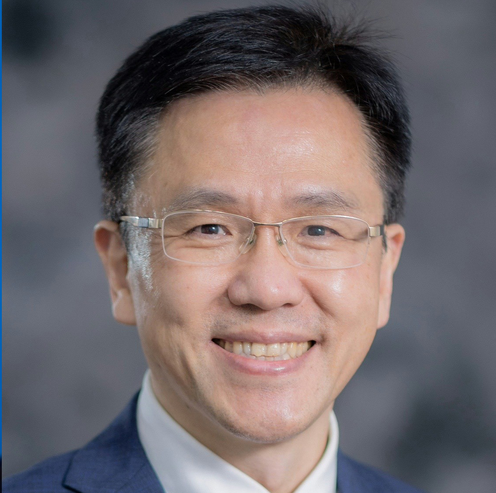
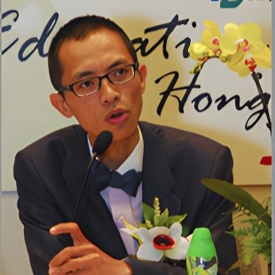
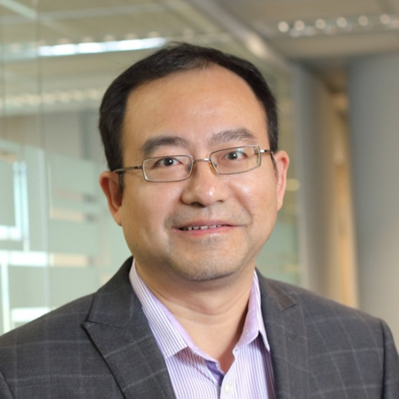
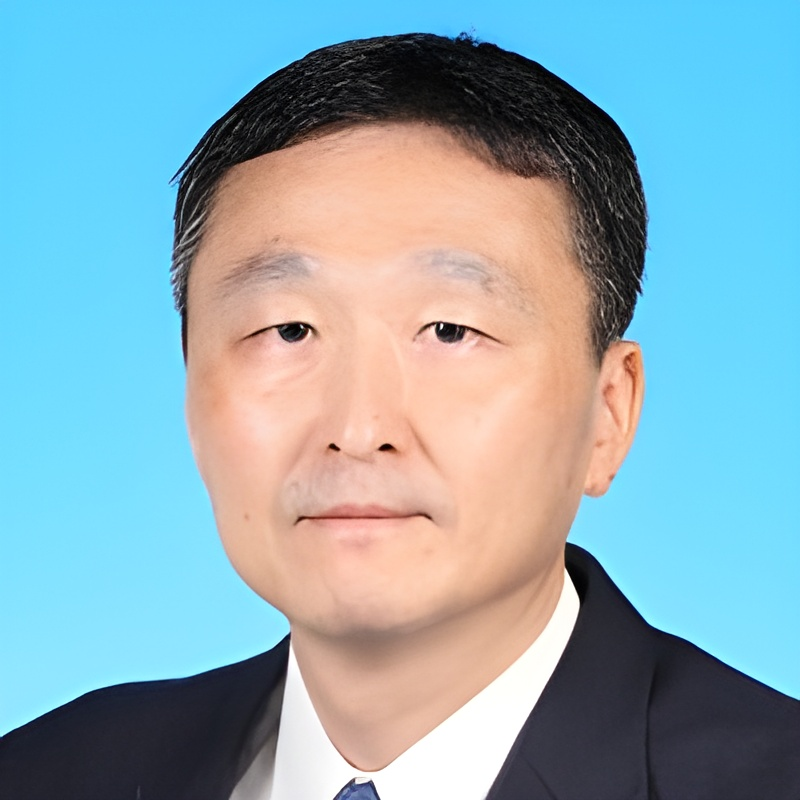
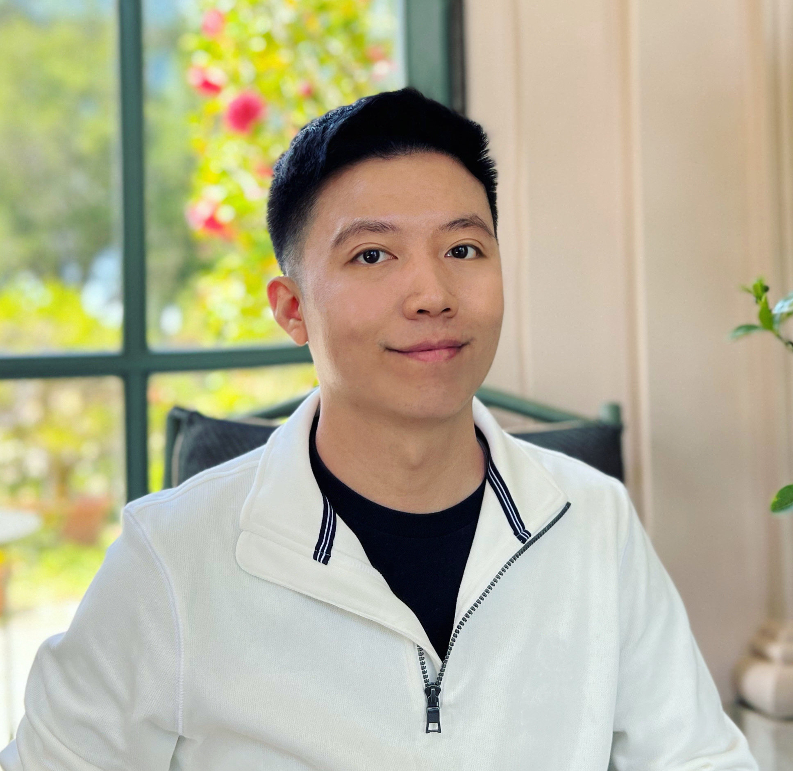

Thursday, October 30, 2025
9:00am - 5:20pm HKT, Tsang Shiu Tim Art Hall(G017), Clear Water Bay Campus, HKUST
Organized by: Media Intelligence Research Center, Division of Emerging Interdisciplinary Areas, Academy of Interdisciplinary Studies, HKUST
The High-Level Forum on Generative AI Governance and Cultural Co-Creation convenes global thought leaders, policymakers, researchers, and industry innovators to explore how artificial intelligence can be governed responsibly while advancing cultural innovation and shared human values.
Hosted by the Media Intelligence Research Center at the Hong Kong University of Science and Technology (HKUST), this signature event provides a premier platform for dialogue on the policy frameworks, regulatory approaches, and cultural paradigms shaping the future of generative AI. The program features visionary keynotes, innovation forums, and fireside dialogues that span critical themes—from digital policy and governance to AI’s transformative role in art, culture, and education. Distinguished keynote speakers include the Secretary for Justice, the Secretary for Innovation, Technology and Industry, the Privacy Commissioner for Personal Data, the Deputy Director of Intellectual Property, and the Chairman of the West Kowloon Cultural District Authority, alongside leading academics, industry experts, and cultural leaders. The forum also features international perspectives on AI ethics and responsible innovation contributed by prominent global authorities in AI and digital policy.
Bringing together government leaders, scholars, innovators, and cultural institution directors, the forum will foster forward-looking discussions on trust, accountability, and cultural sustainability in the AI era—charting pathways toward AI systems that not only serve the public good but also preserve and celebrate the world’s cultural diversity.





| Program | Hong Kong Time 2025-10-30 |
|---|---|
| OPENING SESSION | |
| Coffee Reception | 8:40 AM - 9:00 AM |
| Welcome Address
• Prof. Yike Guo - Provost, HKUST • Prof. Huamin Qu - Dean, Academy of Interdisciplinary Studies, HKUST |
9:00 AM - 9:05 AM |
| Inauguration of the Media Intelligence Research Centre
• Prof. Yike Guo - Provost, HKUST • Prof. Huamin Qu - Dean, Academy of Interdisciplinary Studies, HKUST • Prof. Céline Yunya Song - Director, Media Intelligence Research Center, HKUST |
9:05 AM - 9:10 AM |
| OPENING PERSPECTIVES | |
| Opening Perspectives
• Prof. Yike Guo - Provost, HKUST • Ms. Merve Hickok - President and Research Director, Center for AI and Digital Policy |
9:10 AM - 9:30 AM |
| DISTINGUISHED KEYNOTE ADDRESS – THOUGHT LEADERSHIP INSIGHTS | |
| Distinguished Keynote Address – Thought Leadership Insights
• Prof. Dong Sun, JP - Secretary for Innovation, Technology and Industry, HKSAR Government • Ms. Ada Chung Lai-ling, SBS - Privacy Commissioner for Personal Data, HKSAR Government • Mr. Thomas Tsang Chi-sham - Deputy Director of Intellectual Property, HKSAR Government |
9:35 AM - 10:05 AM |
| INNOVATION FORUM 1 – POLICY AND REGULATORY FRAMEWORKS FOR GENERATIVE AI | |
| Innovation Forum 1 – Policy and Regulatory Frameworks for Generative AI
Moderator: Prof. Céline Yunya Song - Director, Media Intelligence Research Center, HKUST Discussants: • Ms. Ada Chung Lai-ling, SBS - Privacy Commissioner for Personal Data, HKSAR Government • Mr. Thomas Tsang Chi-sham - Deputy Director of Intellectual Property, HKSAR Government • Prof. Weiyu Zhang - Provost's Chair Professor, National University of Singapore; Director, Civic Tech Lab • Prof. Herman Cappelen - Chair Professor and Director, AI & Humanity Lab, HKU |
10:10 AM - 10:55 AM |
| DISTINGUISHED KEYNOTE ADDRESS – THOUGHT LEADERSHIP INSIGHTS | |
| Distinguished Keynote Address – Thought Leadership Insights
• Mr. Henry TANG Ying-yen, GBM, GBS, JP — Former Chairman of the Board, West Kowloon Cultural District Authority |
11:00 AM - 11:10 AM |
| INNOVATION FORUM 2 – CULTURALLY ADAPTIVE AI FOR DIVERSE SOCIETIES | |
| Innovation Forum 2 – Culturally Adaptive AI for Diverse Societies
Moderator: Prof. Chan King Cheung - Raymond R. Wong Endowed Professor in Media Ethics, HKBU Discussants: • Prof. Roland T. Chin - President Emeritus, HKBU • Dr. Louis Ng - Director, Hong Kong Palace Museum • Prof. Marta Severo - Director, DICEN Laboratory, France • Ms. Wai Pui Man, Echo - Controller (Production Services), RTHK |
11:10 AM - 12:05 PM |
| 🍽️ LUNCH BREAK | 12:20 PM - 1:40 PM |
| DISTINGUISHED KEYNOTE ADDRESS – THOUGHT LEADERSHIP INSIGHTS | |
| Distinguished Keynote Address – Thought Leadership Insights
• Mr. Paul Lam Ting-kwok, GBS, SC, JP - Secretary for Justice, HKSAR Government |
2:00 PM - 2:10 PM |
| INNOVATION FORUM 3 – CREDIBILITY & ACCOUNTABILITY IN THE ERA OF GENERATIVE AI | |
| Innovation Forum 3 – Credibility & Accountability in the Era of Generative AI
Moderator: Prof. Masaru Yarime - Associate Professor, Division of Public Policy, HKUST Discussants: • Prof. Jyh-An Lee - Outstanding Fellow, Faculty of Law, CUHK; Founding Executive Director, Centre for Legal Innovation and Digital Society, CUHK • Mr. Jeff Lai - Interim Chief Information Officer, Information Technology, Securities and Futures Commission • Dr. Charles Cheung - Senior Data Scientist and Deputy Director, NVIDIA AI Technology Center Hong Kong • Prof. Simon Goldstein - Associate Professor, Principal Investigator, AI & Humanity Lab, HKU |
2:10 PM - 3:00 PM |
| ☕ TEA BREAK | 3:00 PM - 3:20 PM |
| FIRESIDE DIALOGUE 1 – DIGITAL POLICY AND AI: GOVERNANCE, INNOVATION, AND INDUSTRY PRACTICES | |
| Fireside Dialogue 1 – Digital Policy and AI: Governance, Innovation, and Industry Practices
Moderator: Prof. Kira Matus - Associate Dean, Academy of Interdisciplinary Studies, HKUST Discussants: • Mr. Tony Wong, JP - Commissioner for Digital Policy, HKSAR Government • Prof. Yanto Chandra - Professor, Department of Public and International Affairs, CityU • Prof. Herbert Chia, JP - Co-Chairman, International Data Industry Alliance; Senior Advisor, Alibaba Cloud Intelligence (North APAC & SEA Region) • Mr. Hua Xu - Head of Software, Hong Kong Generative AI Center • Mr. Alan Lam — Director, Deloitte Consulting |
3:20 PM - 4:10 PM |
| FIRESIDE DIALOGUE 2 – AI, CULTURE, AND SOCIETY: BUILDING TRUST AND SHARED VALUES | |
| Fireside Dialogue 2 – AI, Culture, and Society: Building Trust and Shared Values
Moderator: Prof. Anyi Rao - Associate Director, Media Intelligence Research Center, HKUST Discussants: • Prof. Eleni Mouratidou - Vice President, Université Paris Nanterre • Prof. Wei Xue - Assistant Professor, AIS & Founding Member of HKGAI, HKUST • Prof. Zhao Alexandre Huang - Associate Professor of Communication, Université Gustave Eiffel • Prof. David Andrew Haslett - Research Assistant Professor, Division of Social Science, HKUST • Ms. Jenny Li - PhD Researcher, Academy of Interdisciplinary Studies, HKUST • Mr. Kit Wong - Executive Editor, YAZHOU ZHOUKAN |
4:15 PM - 5:15 PM |
| CLOSING REMARKS AND EVENT CONCLUSION | |
| Closing Remarks and Event Conclusion
• Prof. Céline Yunya Song - Director, Media Intelligence Research Center, HKUST |
5:15 PM - 5:20 PM |
The Media Intelligence Research Center (MIRC) is HKUST's interdisciplinary hub advancing Artificial Intelligence and its applications across media, governance, culture, and society. With 19 core faculty from engineering, computer science, business, policy, and the humanities, together with affiliates from world-leading universities, MIRC connects advanced academic research to policy, governance, and practical applications.
MIRC investigates and innovates how frontier research outputs can be applied across governance, media, culture, education, health, and sustainable development. Its work bridges technology and humanity, ensuring that breakthroughs in AI are translated into applications that are transparent, accountable, and socially responsible.
To structure its work, MIRC organizes cutting-edge projects into five research clusters that connect academic excellence with policy and application impact:
For inquiries about the High-Level Forum on Generative AI Governance and Cultural Co-Creation, please contact:
Media Intelligence Research Center
Division of Emerging Interdisciplinary Areas
Academy of Interdisciplinary Studies
The Hong Kong University of Science and Technology